overlay 网络
Docker Swarm 集群使用 overlay 网络模型实现跨节点通信
是重叠网络或覆盖网络，一种构建于 underlay 下层网络之上的逻辑虚拟网络。在宿主机的物理网络之上又创建出新的网络
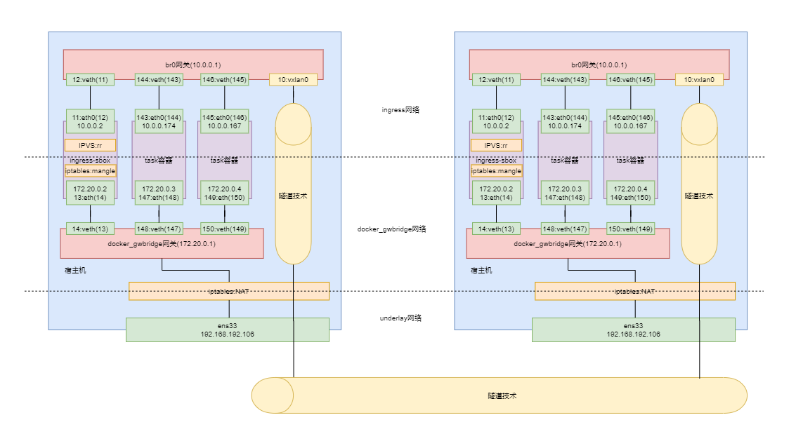
Docker Swarm 集群的 overlay 网络模型在创建时，会创建出两个网络：docker_gwbidge 网络与 ingress网络
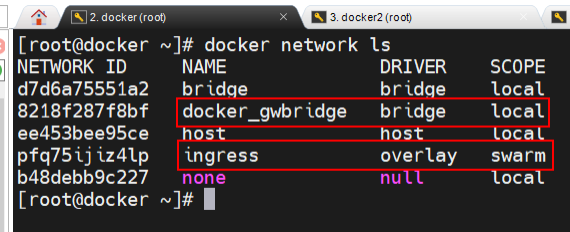
同时还创建出了 docker_gwbidge 网关与 br0 网关，及 ingress-sbox容器(ingress-sbox 容器是由 overlay 网络虚拟出的，并不是真实存在的进程，通过 docker ps 命令是查看不到)
一次请求的流程：
宿主机网卡 -> NAT (跨网络) -> docker_gwbrige 网桥 -> ingress-sbox 容器(跨网络) -> br0 网桥 -> 同主机转发到容器 / 不同主机转发到vxlan隧道转发到另一台主机
宿主机NAT表
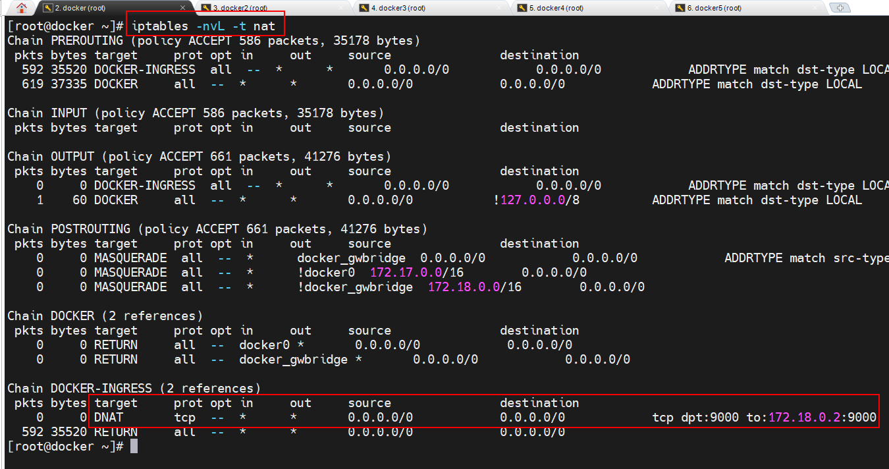
ingress-sbox 容器内路由表
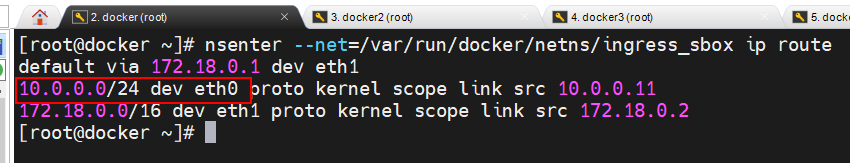
Docker swarm
swarm 架构
manager子集群：
- 运行分配的任务/服务; 维护 swarm 集群状态、调试 servcie、处理 swarm 集群管理任务。这些 manager 间通过Raft 算法维护着一致性，manager节点间可以相互通信及与worker通信
|
|
- 采用热备容灾，只有一个manager处于leader状态，其余处于热备状态等待leader下线采用raft算法再选举
- 当某个 task 所在的主机或容器出现了问题时，manager 的编排器会自动再创建出新的task，然后分发器会再选择出一台 available node 可用节点，并将该节点分配给新的 task。
worker节点：运行分配的任务/服务 ，worker间不能相互通信
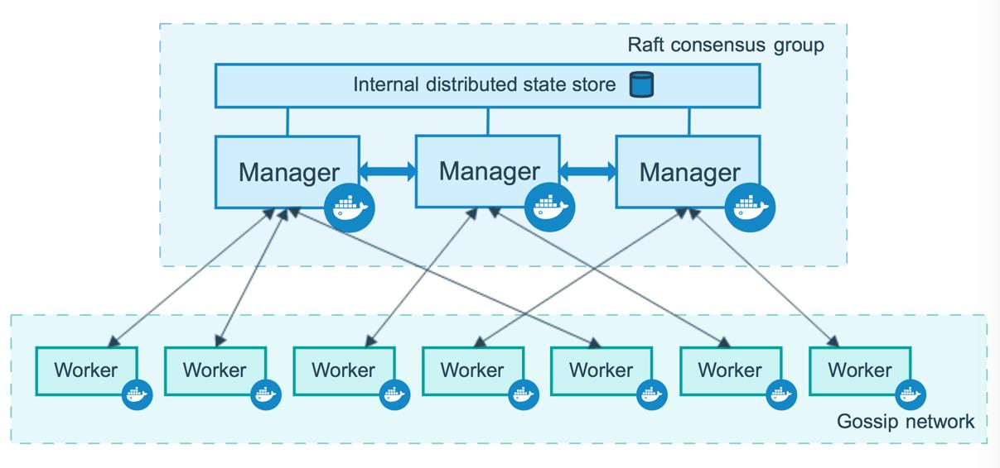
物理上：swarm由多台宿主机构成
逻辑上：swarm由node/节点构成（分manage/worker），节点与宿主机不一定是一对一关系
服务
swarm集群运行服务（一个服务可以分为多个任务由manager分发器交给不同节点的容器运行），易部署，提供负载均衡，容灾……
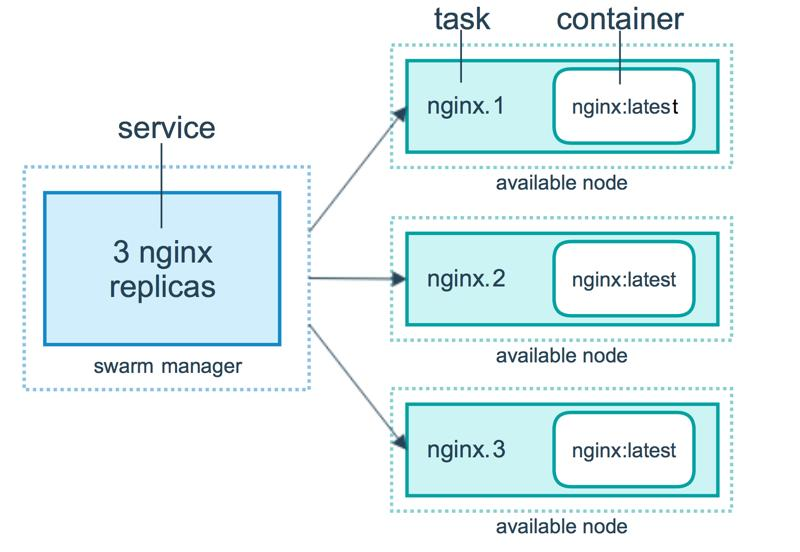
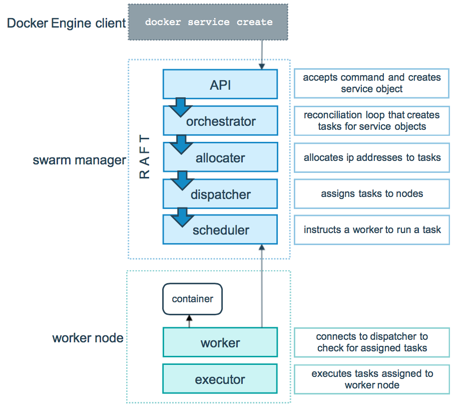
服务部署模式
分两种方式：
- replicated: 可以指定该服务要运行多少个相同的任务，均匀分发给各节点
- global: 每个节点都运行一个该服务的相同的任务
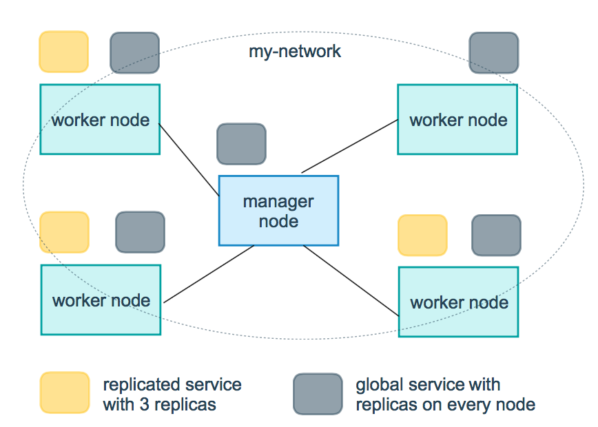
swarm 相关命令
|
|
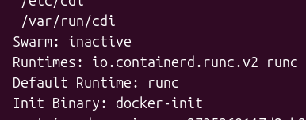
|
|
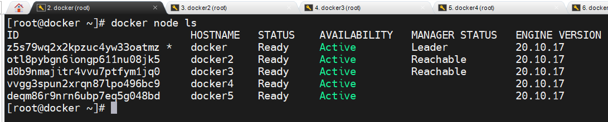
|
|
自动锁定
集群自动锁定功能为 manager 间的通信启用了 TLS 加密。用于加密和解密的公钥与私钥，全部都维护在各个节点的 Docker 内存中。一旦节点的 Docker 重启，则密钥丢失
再次启动后进入锁定状态，需要使用密钥解锁，否则不能进入swarm
|
|
PKI 公钥基础设施
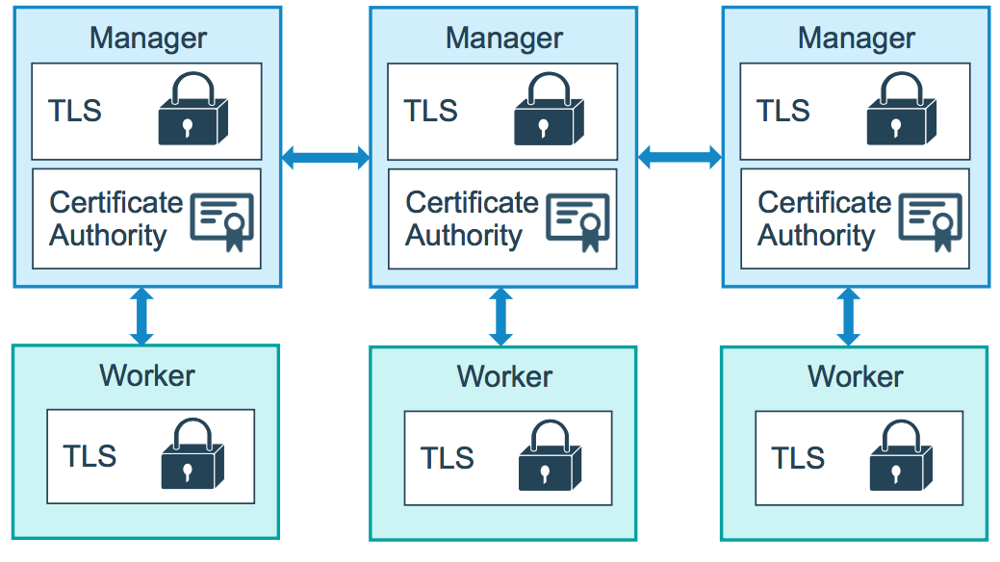
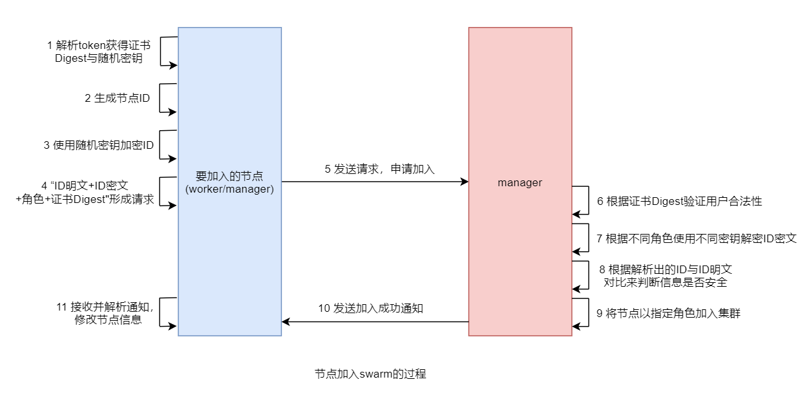
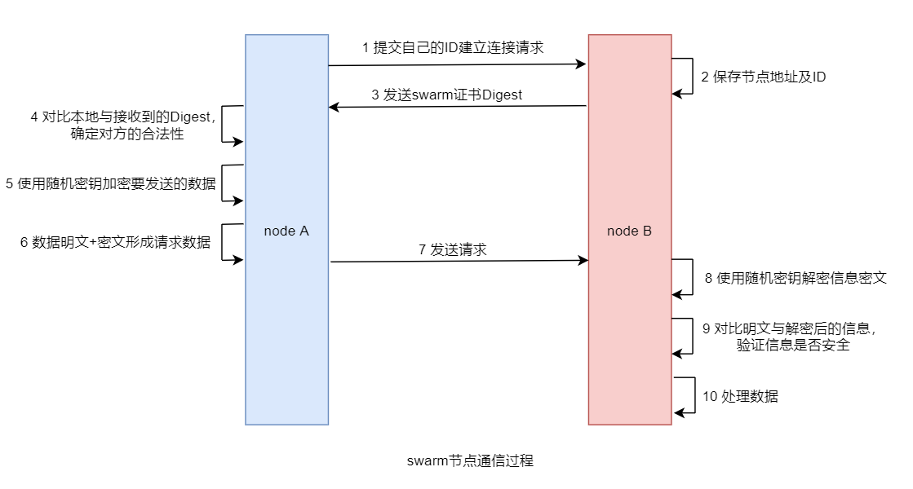
service / node相关命令
|
|
|
|
滚动更新
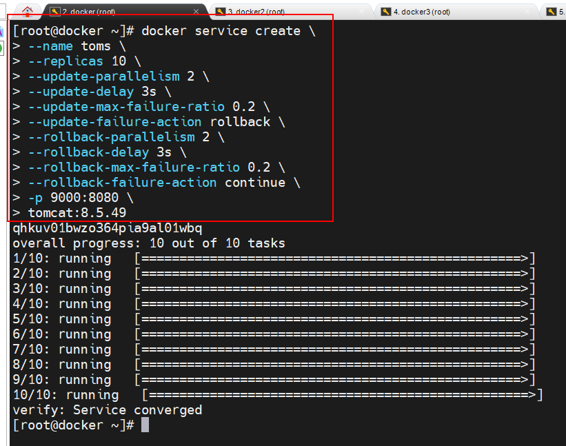
更新的过程就是前面在创建服务时指定的那样，每次更新 2 个 task，更新间隔为 3 秒
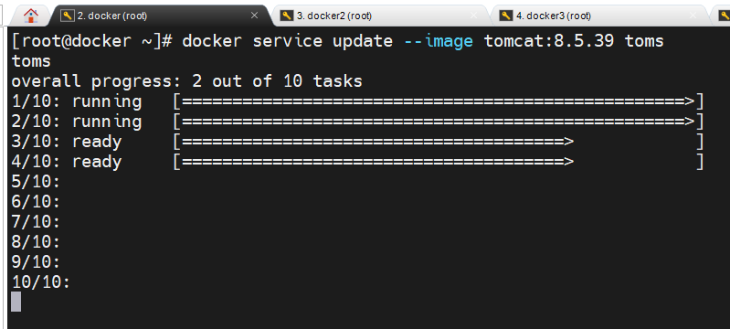
回滚
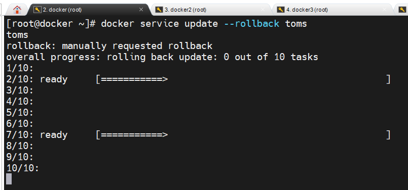